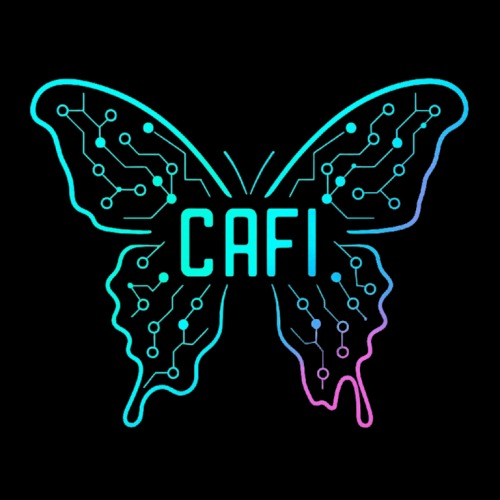

Cafi Team
26/07/2025
Observa el demo de nuestro proyecto CAFI en acción:
Un proyecto de innovación tecnologica con enfoque social e inclusivo
Encargado del modelo de inteligencia artificial

Encargado del funcionamiento de holograma y hardware

Encargada del desarrollo de software
CAFI es una propuesta tecnológica que busca innovar en la atención al cliente en restaurantes mediante la integración de inteligencia artificial, proyección holográfica e interfaces accesibles. Su objetivo principal es ofrecer una experiencia de interacción más fluida, autónoma e inclusiva para todos los comensales, incluyendo aquellos con discapacidades visuales, auditivas o de movilidad.
La inteligencia artificial es el núcleo del funcionamiento cognitivo de CAFI. Gracias a ella, el asistente holográfico puede comprender lo que el cliente dice, interpretar sus necesidades y responder de forma coherente y útil.
Este componente permite que el asistente comprenda gestos manuales usados en el lenguaje de señas, facilitando la comunicación con personas con discapacidad auditiva y haciendo la experiencia más autónoma y accesible.
CAFI se presenta como una proyección tridimensional visible en el espacio físico, lo que permite una interacción más cercana; este enfoque rompe con las interfaces tradicionales en pantalla y transforma la experiencia en algo atractivo e inclusivo

Es el punto de gestión desde donde se adaptar el comportamiento del holograma a sus necesidades operativas. A través de ella, se configuran parámetros como las respuestas del asistente, el menú disponible, las funciones de accesibilidad y más.
Observa el demo de nuestro proyecto CAFI en acción: